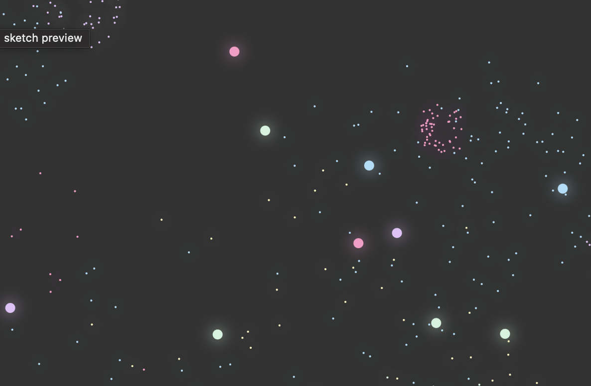
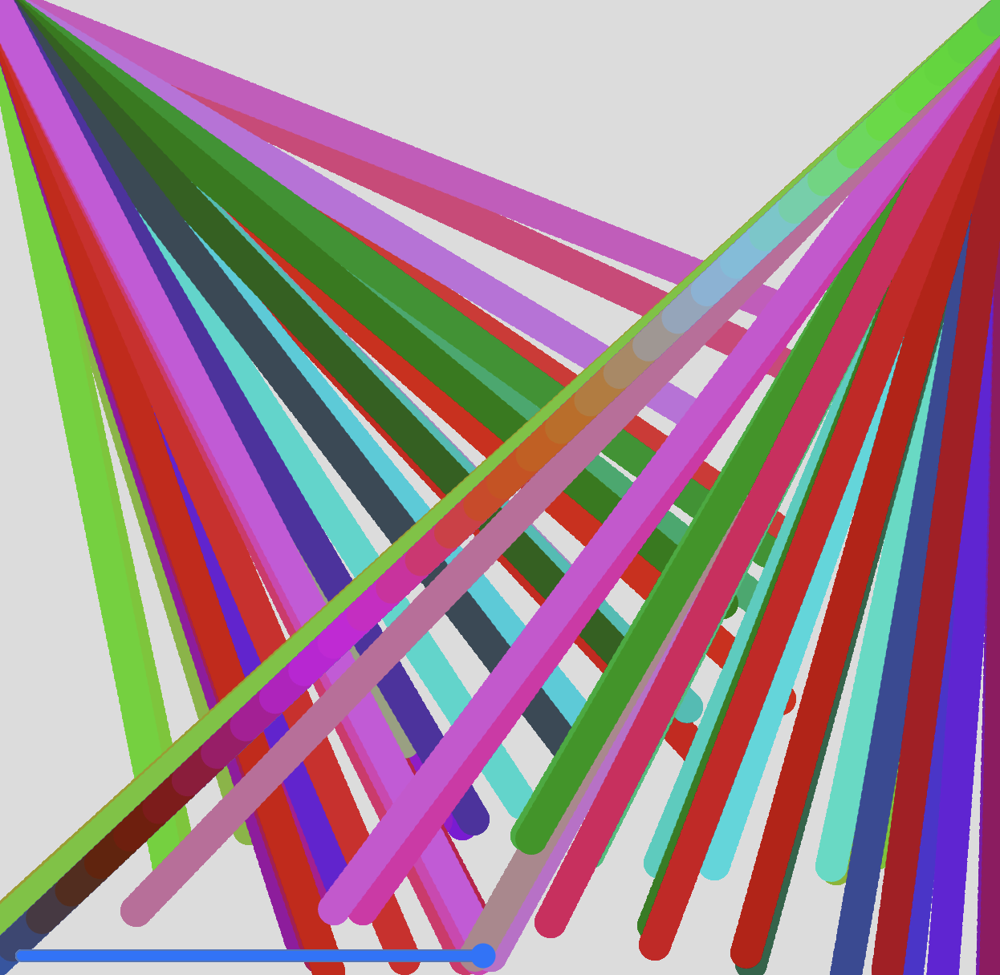

        <div class="artpiece gif">
            
            <div class="name">Lockett Pentz</div>
            <span class="title">Random Firework</span>
            <span class="language">JavaScript
                <a class="source-link" href="https://editor.p5js.org/Lockett14/full/DewqgH2hI" target="_blank">(source)</a>
            </span>
        </div>
        

        <div class="artpiece">
            <a href="https://editor.p5js.org/gbuffa2027/sketches/GCqHOaMk5" target="_blank">
                
            </a>
            <div class="name">Gibson Buffa</div>
            <span class="title">THE CIRCLE SOUND MACHINE</span>
            <span class="language">JavaScript
                <a class="source-link" href="https://editor.p5js.org/gbuffa2027/sketches/GCqHOaMk5" target="_blank">(source)</a>
            </span>
        </div>
        